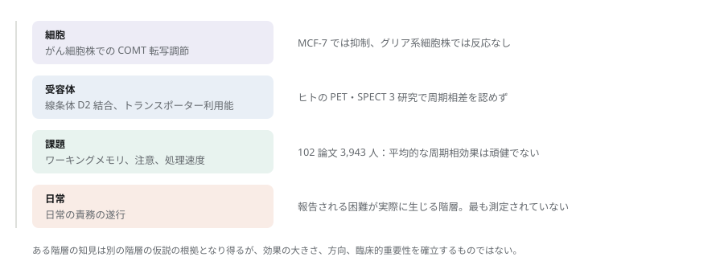
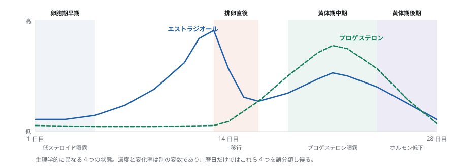
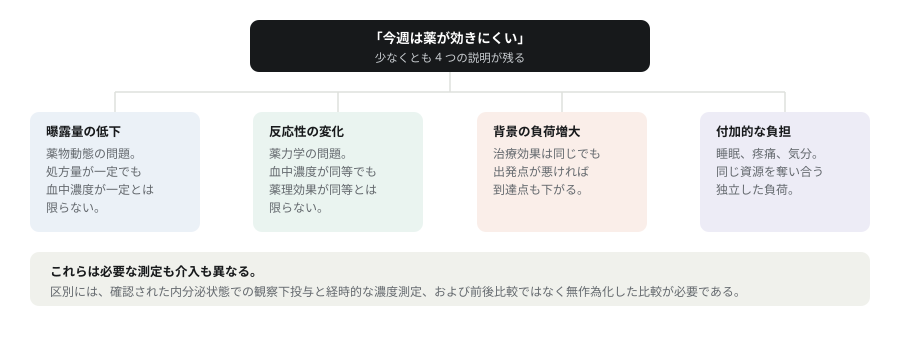

月経周期と ADHD が論じられるとき、3 つの説明がしばしば一括して扱われる。卵巣ステロイドの変動が ADHD の神経生物学的機序を変化させるのか、部分的に独立した負担を加えるのか、あるいは機能障害の認識と対処のあり方を変えるのか。これらが必要とする測定と介入はそれぞれ異なり、現時点の文献はこの 3 つを区別できていない。文献が支持するのは、卵巣ホルモンの状態に対する異質な感受性であり、それを媒介する経路は未解明のままである。本稿では、ヒトの ADHD に関する観察に対して、あらかじめ神経伝達物質による説明を付与することなく、機序研究および相反する知見と併せて考察する。
第 1 節問いを正確に立てる
注意、情動調節、および治療の便益に月経周期に伴う変動がみられるという報告は、実際に重要な問いを提起する。近年のレビューが示すのは、月経関連症状から他の生殖移行期にわたる、小規模で異質性の高い文献群である。これらの観察を、低エストロゲンがドパミンを減少させ ADHD を悪化させることの一元的な実証とみなすことは、利用可能なエビデンスを大きく超える。
この課題の一部は、分析する階層の違いにある。カテコールアミン関連酵素の細胞レベルでの調節、線条体の受容体結合、ワーキングメモリ課題の成績、および日常の責務を遂行する際の困難は、相互に関連するものの異なる評価項目である。ある階層の知見は、別の階層における仮説の根拠となり得るが、その効果の大きさ、方向、または臨床的重要性を確立するものではない。

この区別は、精神刺激薬治療中の月経関連症状を解釈する際にとりわけ重要である。服薬下で機能障害が大きいという事実だけでは、治療効果が小さいとはいえない。なお、妊娠、産後、閉経、およびホルモン避妊は背景情報として扱い、自然排卵周期と一括して分析しない。
第 2 節文献の同定と選定
本レビューは、2026 年 9 月 5 日に実施した広範な文献探索を基に作成した。Europe PMC の API を用い、ADHD と生殖ホルモン、月経とカテコールアミン、認知、画像、神経ステロイド、睡眠・ストレス・自律神経機能、神経症状、卵巣ホルモンのカテコールアミン機序、精神刺激薬の薬理、ホルモン避妊、および PMDD を対象とする 11 群のタイトル・抄録検索式を、1800 年から検索日までの初回公開日を対象に実行した。検索時に言語フィルターは適用していないが、これはすべての言語の文献を評価したことを意味しない。
探索コーパスには重複除去後 11,383 件が含まれた。特許 455 件と学位論文 29 件を除外し、対象を絞った 14 件を追加して、候補文献 10,913 件を得た。これらは検索の集計であり、スクリーニング済みの研究数でも、独立した標本数でもない。元の報告書は 136 件の文献を優先し、本稿はそのうち、臨床的関連性、機序上の特異性、デザインの情報量、および反証的知見を基準として、より限定的な部分集合を選定した。事前登録されたプロトコル、人間の評価者による独立した重複スクリーニング、網羅的な引用追跡、および標準化されたバイアスリスク評価は、いずれも実施していない。抄録レベルの情報しか得られなかった場合は、報告された所見に解釈を限定し、アクセス上の制約を明示した。プレプリントは主要な統合において根拠として用いていない。
第 3 節動的変数としての卵巣ホルモン曝露
排卵周期では、エストラジオールは一般に排卵前に上昇し、その後低下して、黄体期により小さな再上昇を示す。プロゲステロンは排卵後に増加し、月経前に低下する。したがって周期は、生理学的に異なる 4 つの状態を含んでおり、とりわけ黄体期を一様な低エストロゲン期間とみなすことはできない。

ホルモン濃度とホルモンの変化は分けて解釈する必要があり、この区別が最も頻繁に混同される。参加者自身の平均を下回る濃度であっても、その時点で低下しつつあるとは限らない。ホルモン低下に対する感受性の検証には、軌跡を推定できるだけの高頻度なサンプリングが必要である一方、個人平均で中心化した濃度モデルが扱うのは相対的な曝露であり、答えている問いが異なる。受容体や神経回路の適応によって上昇過程と下降過程で反応が異なる場合には、曝露期間や先行するホルモン状態が重要となり得る。
ホルモン避妊では異なる曝露が生じる。合成製剤の組成や休薬期間について、内因性周期の周期相ラベルから推定することはできず、消退出血があることは排卵があったことを意味しない。既存研究の多くは、規則的な周期をもつ、女性または生物学的に女性と記述された参加者を登録している。月経のある多様なジェンダーの人々、不規則周期や無排卵周期、および異なる避妊製剤への一般化可能性は依然として不明である。これらはサンプリングと生理に関する限界であり、いかなる性別またはジェンダーのカテゴリー内でも、月経に対する感受性が普遍的であることを意味しない。
第 4 節カテコールアミン機序とその臨床への橋渡しにおける限界
ドパミンの合成、放出、および受容体の利用可能性
前頭前野のカテコールアミン修飾は、しばしば逆 U 字型の関係で記述される。刺激が不足しても過剰でも、特定の制御機能は障害され得る。この枠組みは、ドパミンの増加が常に認知機能を改善すると仮定すること、また診断名から個人が神経化学的な反応曲線上のどこに位置するかを特定できると仮定することに、注意を促す。
げっ歯類では、エストラジオールが線条体の刺激誘発性ドパミン放出に急速な作用を及ぼすことが示されており、受容体操作の研究は、特定の実験条件下でエストロゲンシグナルと代謝型グルタミン酸受容体との相互作用を示唆している。これらは生物学的な妥当性と、実験的に扱いやすい経路を確立する。しかし、ヒトの自然な月経周期における効果の大きさを確立するものではなく、卵巣摘出とホルモン補充は自然な周期と等価ではない。
ヒトにおける直接的エビデンスは、単純な単調モデルとは整合しにくい。小規模な反復測定 PET 研究では、D2 受容体密度に周期相差を認めなかった。10 人の女性を対象とした研究では、線条体ドパミントランスポーターの利用能に卵胞期と黄体期の差を認めなかった。その後の D2 型 PET 研究でも、内分泌学的な分離があったにもかかわらず、周期に関連する有意な結合変化は報告されていない。この研究は節ごとに標本数の記載が一致しておらず、正確な標本の報告には限界があるが、否定的結果を破棄する理由にはならない。
これらの研究が制約するのは特定の指標であり、ドパミン機能の全体ではない。結合能は、利用可能な結合部位、親和性、内因性リガンドとの競合、および解析上の仮定に依存し、トランスポーター利用能は相動的な放出を測定しない。逆に、小標本での否定的結果は同等性の証明ではない。ホルモン避妊薬使用者 15 人、自然周期の女性 21 人、男性対照 20 人を比較した横断的 PET 研究では、使用者で合成能が高い一方、D2/D3 結合やメチルフェニデート誘発放出には対応する差を認めなかった。評価項目間での乖離こそが情報価値のある部分であり、無作為化されていない曝露であるため、避妊薬の因果的作用としては解釈できない。
カテコールアミン代謝と細胞環境
ヒトの調節領域配列を用いた細胞実験では、エストラジオールが COMT の転写を低下させた。後続の研究では MCF-7 細胞で抑制が認められた一方、U138MG グリア系細胞株では COMT mRNA の反応が認められなかった。この細胞種特異性こそが、臨床への橋渡しにおける問題の縮図である。がん細胞株におけるプロモーター作用は、月経中の皮質カテコールアミンクリアランスの測定ではない。
24 人の女性を対象とした研究は、エストラジオール、COMT 遺伝子型、およびワーキングメモリ成績を関連づけ、状態依存的な修飾に関するヒトでの仮説を提供した。ただしこれはドパミンに関する間接的な推論であり、妥当性の確認されたバイオマーカーでも、遺伝子型に基づく ADHD 治療の根拠でもない。再現研究では、課題依存性、反復検査、遺伝子型下位群の規模、および多重比較に対処する必要がある。また機序研究は、これらの段階が連動して変化すると仮定する前に、関連する神経系標本において転写、タンパク質、酵素活性、およびクリアランスを結びつけるべきである。
ノルアドレナリンと覚醒
ノルアドレナリンは ADHD にとってより直接的に関連する。青斑核と前頭前野の経路が覚醒と制御に寄与するからである。しかし、月経ホルモン、中枢ノルアドレナリン、および ADHD を結びつける縦断的なヒトのエビデンスは乏しく、動物実験の結果も収束するのではなく評価項目ごとに異なる。あるプロトコルではエストラジオールがノルアドレナリン合成酵素の発現を増加させた一方、電気生理学的研究では、エストラジオール投与後に青斑核の自発発火が抑制され、エストラジオールで前処理したラットではプロゲステロン投与後に発火が増加した。アカゲザルでは、青斑核のノルアドレナリントランスポーター mRNA にステロイド関連の変化を認めなかった。これらを、ノルアドレナリン出力の一様な増加として要約することはできない。
末梢指標にも同様の慎重さが必要である。健康な女性 16 人を対象としたプラセボ対照レボキセチンクロスオーバー研究では、トランスポーター阻害に対する心血管反応が周期相と体位に依存したが、これは皮質のトランスポーター活性でも ADHD への有効性でもない。血漿カテコールアミン、心血管反応、および統合された髄液代謝物は、特定の脳領域におけるシナプス内ノルアドレナリンを選択的に定量するものではない。瞳孔測定は収束的な検証に寄与し得るが、瞳孔径は他の神経・自律神経過程も反映する。
第 5 節神経ステロイド感受性と PMDD との比較
プロゲステロン由来のアロプレグナノロンは GABA-A 受容体を正に修飾するが、行動上の帰結は受容体の構成、曝露歴、および回路の文脈に依存する。分子レベルで抑制が増強されることは、臨床的に一様な鎮静反応を予測しない。神経ステロイド感受性は、周期に関連した情動・注意の困難に対するカテコールアミン説の代替、または補完となる妥当な候補である。
PMDD は、この文献群のなかで最も情報価値の高いヒトでの操作研究を提供する。卵巣機能の抑制に続くホルモンの再投与は、感受性のある参加者で症状の再燃を引き起こし、対照群では異なる反応を示した。その後の実験では、再燃は再投与への移行と関連し、安定した曝露が続くあいだは改善した。これは、循環ホルモン濃度の絶対値に必ず異常があるというより、変化する曝露に対する感受性を支持する。ただし、ホルモンの低下だけが関連する移行であることを確立するものではなく、PMDD を伴わない ADHD が同じ機序を共有することを示すものでもない。
小規模なデュタステリド実験は、プロゲステロン変換経路の関与をさらに示唆し、高用量の PMDD コホートで症状の軽減を認めた。ただし複数のステロイド産物が影響を受け、該当コホートの参加者は 8 人であったため、単一の受容体機序を特定するものでも、ADHD への介入を確立するものでもない。マウスにおける受容体操作実験は、抑制系の適応という生物学的可能性を支持する一方で、種と疾患の境界は保たれる。そして、より大規模な無作為化セプラノロン試験は主要症状評価項目を達成しなかった。経路の妥当性が臨床的有効性を保証しないことを示す、有用な事例である。
PMDD が ADHD 研究に示唆すること
周期性の情動症状を前向きに確認し、神経ステロイド感受性の表現型を、持続的な ADHD 症状とは分けて検証すること。逆に許されないのは、月経期の不注意をすべて PMDD かドパミン欠乏のいずれかに帰属させることである。
第 6 節認知、画像所見、および日常生活機能
客観的成績と臨床的異質性
2025 年のメタ解析は、102 論文、3,943 人の参加者、および 730 件の比較を対象とし、客観的に採点される認知領域において周期相による頑健で系統的な差を認めなかった。これは、月経に伴う普遍的な認知機能低下という見方に反する、この領域で最も強い制約である。一方で、暦日に基づく周期相の統一、一部の欠測情報の補完、ばらつきのある周期相の確認方法、および対象となった集団は、解釈を制約する。統合された対比が非有意であることは、すべての個人およびすべての臨床的下位集団が周期相間で同等であることを意味しない。
反復周期の研究は、なぜ再現性が問題になるのかを示している。88 人で認められたホルモンと認知の関連は、第 2 周期に評価した 68 人では再現しなかった。これに対し、最近の希死念慮を有する集団を対象とした無作為化エストラジオールクロスオーバー研究では、月経前後にワーキングメモリと言語流暢性への影響が報告された一方、抑制機能には認められなかった。ITT 解析は 44 人、per protocol 解析は 23 人である。この臨床実験は ADHD 試験ではなく、一般的な認知機能の増強を確立するものではない。
客観的な課題成績、努力、および日常生活機能は、別個の評価項目として扱うべきである。実験室での正確性が保たれていても、疲労の増大、持続性の低下、または構造化されていない活動を整理する困難が併存し得る。逆に、測定可能なワーキングメモリの低下がなくても、認知の曇りが自覚されることはある。いずれの可能性も、主観的または客観的なエビデンスのどちらかが本質的に決定的である、と仮定するのではなく、測定を要する。
画像研究と生理学的特異性
高密度の神経画像研究は、ネットワーク構成と脳構造にホルモン関連の変動を同定しており、27 人を対象とした 6 相の 7T 研究は、血流と水分含量を考慮したうえでホルモンと内側側頭部の指標を関連づけている。これは反復サンプリングの有用性を示す。ただし、構造や結合性の変化だけでは機能障害を確立できず、ドパミンを媒介因子として特定することもできない。
血行動態の解釈にはとりわけ注意が必要である。26 人を対象とした 3 相の研究では、エストラジオールとプロゲステロンの高値が、より大きな灌流とより短い動脈到達時間に関連していた。したがって、ホルモンに関連する BOLD 変化には、神経性だけでなく血管性の寄与も含まれ得る。灌流、血管反応性、電気生理、および成績を同時に評価すれば一部の代替説明は区別できるが、視覚的に印象的な賦活マップだけではそれはできない。
睡眠、ストレス、および疼痛
睡眠研究は、睡眠紡錘波活動と黄体期の体温に比較的一貫した月経性変動を報告する一方、主観的睡眠についてはより不均一な変化を報告している。2,641 人の参加者を含む 121 件の縦断研究のメタ解析では、卵胞期と黄体期の基礎コルチゾールに小さな差を認めたが、月経に伴う一様に大きなストレス効果を示すものではなかった。コルチゾール、迷走神経活動、およびカテコールアミンシグナル伝達は異なる生理学的評価項目であり、互いに代用できない。
片頭痛、月経痛、および月経関連てんかんは、特定の疾患において臨床的に意味のあるホルモン関連の脆弱性を示すが、その機序と治療に関する知見は診断特異的である。てんかんのある 294 人を対象とした無作為化プロゲステロン試験は、主要な反応者比較で否定的であり、そこでの下位群のシグナルを ADHD に一般化することはできない。ADHD スクリーニング該当と過多月経を関連づけた地域住民研究も、鉄欠乏を機序として確立していない。フェリチンは測定されておらず、観察デザインでは媒介を確立できない。睡眠、疼痛、気分、および長期的な鉄の状態は、特徴づけるべき寄与因子であり、あらゆる周期効果を媒介すると前提すべき因子ではない。
第 7 節ADHD に関する直接的エビデンス
前向きの症状軌跡と当事者の経験
Roberts らは、規則的な周期をもつ若年女性 32 人を 35 日間追跡し、唾液を毎日採取してステロイドを隔日で測定するとともに、ADHD 症状を毎日報告させた。個人内で相対的に低いエストラジオールは、プロゲステロンまたはテストステロンが高い環境下で、とくに特性衝動性が高い場合に、翌日の症状の増加を予測した。周期相の解析は、排卵直後および卵胞期早期の脆弱性を示唆した。ただしこれは地域住民の症状サンプルであり、診断された 32 人のコホートではない。また濃度モデルは、エストラジオールの低下速度の効果を示すものではない。
Zaritsky らは、アンフェタミン製剤で治療中の 30 人に前向き観察を拡張した。35 日間の毎日の調査では、症状は月経中に最も強く、卵胞期中期には弱く、陰性感情の変動と関連していた。入手可能な抄録は、治療中に症状が変動することを支持するが、経時的な薬物濃度や無作為化した有効性比較を示すものではない。Padilla らは、ADHD の思春期女子 30 人を対象に、2 回の周期セッションにわたる探索的な認知プロファイルを報告したが、ホルモン状態の確認と薬剤の取り扱いを評価するには情報が不足していた。
精神刺激薬で治療中の 10 人への質的面接は、黄体期中期の困難や薬物治療の便益に対する不確かさを含め、周期に関連した変化の自覚を記述した。こうした記述は、実験室研究が見落とす評価項目と仮説を同定するが、選択された面接から有病率や因果効果を推定することはできない。これらのデザインを通じて、脆弱な期間は一様ではない。その違いは、ホルモン状態の確認方法、年齢、治療、情動性の併存症、評価項目の選択、あるいは実際の生物学的異質性を反映している可能性がある。
| 研究とデザイン | 対象と評価 | 所見と解釈上の限界 |
|---|---|---|
| Roberts ら 2018 | 地域住民 32 人。35 日間。唾液を毎日採取し、ステロイドを隔日測定。 | ホルモン環境および衝動性の条件によって、個人内の相対的ホルモン濃度が翌日の症状を予測した。ADHD 診断群ではなく、濃度変化率の効果を示すものではない。 |
| Zaritsky ら 2026 | アンフェタミン治療中の 30 人。35 日間の毎日評価。 | 月経期の症状が卵胞期中期より強く、陰性気分の変動と関連した。抄録に基づく評価であり、薬物曝露量や治療効果の変化は示されていない。 |
| Padilla ら 2026 | ADHD の思春期女子 30 人。認知検査を 2 回実施。 | 探索的解析で成績低下群と安定群を認めた。方法の確認は抄録に限られ、少人数の派生群には再現が必要である。 |
| Bürger ら 2024 | 精神刺激薬で治療中の 10 人。質的面接。 | 黄体期中期の困難を含め、周期に関連した機能と薬効の変化の自覚。有病率や因果効果の推定はない。 |
| Broughton ら 2025 | オンライン回答者 715 人。ADHD の定義が重複。PMDD は後ろ向きスクリーニング。 | 暫定的 PMDD は ADHD 臨床診断群で 31.4%、対照群で 9.8%。募集集団のスクリーニング割合であり、集団における診断有病率ではない。 |
| de Jong ら 2023 | ADHD 外来 9 人。個別化した月経前の精神刺激薬増量。6〜24 か月追跡。 | 全例で改善と継続が報告された。非対照・非盲検であり、有効性や安全性の推定ではなく試験仮説を生成するものである。 |
ADHD、PMDD、月経前増悪は別のものである
これら 3 つは異なる時間的パターンを指す。持続的な発達性 ADHD 症状は、周期性の情動症候群と併存することも、疼痛、睡眠障害、気分症状とともに増悪することもある。黄体期後期の症状得点が高いというだけでは、これらの可能性を区別できない。
715 人を対象としたオンライン調査では、暫定的 PMDD は、ADHD の臨床診断を受けたと報告した群で 31.4%、非 ADHD の対照群で 9.8% であり、ASRS で定義した重複群ではより高い割合であった。これらは募集集団におけるスクリーニング推定値であり、集団の診断有病率ではない。後ろ向きスクリーニングでは、前向きに確認された PMDD と他の疾患の増悪を確実に区別できない。うつや不安の報告のない ADHD 臨床診断の小規模な下位群でも推定は不精確であり、情動性併存症の寄与は未解決のままである。
PMDD 58 人と対照 50 人を対象とした反復周期研究では、黄体期後期の負担の増大を含め、注意関連および衝動性の困難が認められた。ただしこれらは自己報告であり、客観的な認知検査の結果ではない。より大規模な ADHD 専門外来の集団でも生殖関連の気分症状負担が報告されているが、選択と後ろ向き測定が因果的解釈を制約する。次に必要な比較は、臨床的に確立された ADHD と前向きに評価した PMDD を交差分類し、併存群と単一診断群の双方を保持することである。
薬物治療の便益と曝露量
健康な女性を対象とした小規模なプラセボ対照の実験室研究では、一部の条件下で d-アンフェタミンの主観的効果に周期相関連の差が報告された。これらの評価項目は急性の薬物体験に関するものであり、持続的な症状コントロールと同一視することはできない。個別化した月経前の精神刺激薬増量後の改善を記述した 9 人の症例集積は、6〜24 か月の追跡が行われたものの、盲検化と同時並行対照がなく、薬剤と併存症が不均一で、評価手順も変化しており、一般的な有効性や安全性の推定はできない。

したがって、検討したエビデンスは、周期に応じた普遍的な用量調整アルゴリズムを確立していない。これは、個人がそうした変動を経験していないという主張ではなく、特定の個人においてそれを慎重に特徴づけることに反対する主張でもない。支持できない一般則を、支持できないエビデンスから引き出すことに反対しているのである。
第 8 節競合する 8 つの仮説と、それを弱める所見
エビデンスが支持するのは、ホルモン状態が複数の経路に影響し得る一方、日常生活機能は治療と環境からの要求にも依存する、という多階層のモデルである。これは検証可能な代替説明の集合であり、すべての経路がすべての患者で働くという主張ではない。ホルモン軌跡と機能との総関連は、治療とホルモンの交互作用とは異なる量であり、それはまた特定経路の因果効果とも異なる。気分で調整すると関心のある媒介成分を取り除く可能性がある一方、既存の情動障害を無視すると交絡が残り得る。共変量の選択は、研究上の問いに従う必要がある。
| 仮説 | 識別のための実験 | 仮説を弱める所見 |
|---|---|---|
| 1. ホルモンの移行 | 内分泌指標を高頻度で反復測定し、検証用に留保した周期で濃度モデルと軌跡モデルを比較する。 | 測定精度が十分でも、軌跡項が濃度を超える意味のある予測情報を加えない。 |
| 2. 神経ステロイド感受性 | ADHD と前方視的に確認した PMDD を交差分類し、内分泌の移行と安定曝露を比較する。 | 適切な曝露と標的への作用が確認されても、想定した亜群で移行感受性が再現されない。 |
| 3. 薬物曝露量の変化 | ホルモン状態を確認し、服薬を観察して濃度を経時測定する。同等性限界を事前規定する。 | 曝露量の同等性が示されても機能変動が再現されれば、全身薬物動態による説明は弱まる。 |
| 4. 睡眠・疼痛・気分の経路 | 前方視的な時系列測定の後、特定経路への介入と対応する対照条件を比較する。 | 媒介因子が確実に改善しても意味のある機能改善が得られなければ、想定した因果経路は弱まる。 |
| 5. 状態依存性カテコールアミン作用 | 独立したベースライン評価と再現性検証を用い、ホルモン状態と課題負荷または無作為化した摂動の交互作用を調べる。 | 曝露と課題感度が十分でも、事前規定した交互作用が再現されない。 |
| 6. 血管性寄与または代償 | 灌流を考慮した画像、EEG、遂行成績の同等性、努力指標を組み合わせる。 | 血管要因を調整しても神経変化が複数手法で一致すれば血管のみの説明は弱まり、努力増大がなければ代償説は弱まる。 |
| 7. ストレス関連の覚醒脆弱性 | 確認した周期相でストレス条件と中性条件を無作為化し、注意の脱落と複数の生理指標を測定する。 | 効果が安静時の末梢指標に限られ、行動上の周期相とストレスの交互作用が再現されない。 |
| 8. 細胞種に依存する COMT 調節 | 複数ドナーの神経培養系で変動曝露と対応する一定曝露を比較し、COMT ノックダウンとレスキューを行う。 | 受容体への作用があっても神経系の COMT 効果がない、または COMT 除去後もクリアランスへの効果が残る。 |
仮説 1 と 2 は曝露歴に関するものである。仮説 3 は薬物動態に関するものであり、仮説 4 は追加または媒介され得る負担に関するものである。仮説 5 から 8 は、より対象を絞った機序上の問いを提示する。8 つはいずれも検討したエビデンスに基づくが、確立された知見ではない。情報価値のある否定的結果も含め、最も近い代替説明と比較して、事前に規定したうえで検証すべきである。
第 9 節段階的な実証研究計画
第一の優先課題は、再現可能な臨床表現型を得ることであり、それなしにはほとんど何も決着しない。縦断研究では、ADHD と PMDD の有無を 4 群に分け、少なくとも 2 回のスクリーニング周期で周期性症状を前向きに確認し、推定と検証のために追加の周期を観察すべきである。ホルモン状態に基づくサンプリングでは、移行期の測定密度を高めることにより、濃度と変化を区別する必要がある。内分泌測定には、簡潔な日々の機能評価、服薬時刻、気分、睡眠、疼痛、および出血の測定を伴わせるべきである。実験室での反復評価によって、客観的な制御機能、反応時間変動、および努力に関する評価項目を追加できるが、より長い期間の想起を求める ADHD 尺度を、そのまま妥当性の確認された日次尺度と呼び替えるべきではない。
薬物動態サブスタディでは、投与を観察下で実施し、製剤を区別したうえで、確認された内分泌状態における薬物濃度を時系列で測定するとともに、服薬遵守と関連する生理情報を収集すべきである。曝露量の同等性には、事前に規定した許容範囲と十分な精度が必要であり、検定が非有意であるだけでは不十分である。その後、臨床クロスオーバー試験において、前向きに確認した脆弱な期間中に、必要に応じて基礎治療を維持しながら、臨床医が選択した調整と識別不能な対照を比較できる。期待効果ではなく便益を推定するには、無作為化、割付の盲検化、有害作用の評価、および複数周期の反復が必要である。これらは研究提案であり、処方スケジュールではない。
解析はデザインと同じだけ重要である。参加者、周期、および日を区別し、個人内のホルモン偏差を個人間の差から分離するとともに、系列相関と情報性のある欠測に対処すべきである。欠測は、最も機能障害の強い日にこそ増えやすい。同じデータで脆弱性を定義して検証すると、下位群に関する結論が過度に楽観的になる危険がある。交互作用の推定において、日次観察数の増加は独立した参加者数の代わりにはならない。標本数は、測定誤差、欠測、および臨床的に意味のある主要推定対象を組み込んだ、実際のデザインのシミュレーションに基づいて決定すべきである。
第 10 節限界と、残るもの
本レビューは、適格性基準に基づく網羅的な収載よりも、説明の整合性と反証的知見を優先した。広範な検索ライブラリには隣接領域の文献が含まれており、肯定的な結果の頻度を評価するための分母にはならない。選定は目的に応じて行われ、資料へのアクセスの深度には差があった。正式なバイアスリスク評価と、人間の評価者による独立した重複スクリーニングは完了していない。異質な集団と評価項目にわたる定量的効果は統合しなかった。これらにより、完全性や段階づけされた確実性に関する主張には限界がある。
基礎となる臨床的エビデンスにも制約がある。小標本、選択された対象の募集、後ろ向きの症状帰属、一貫しないホルモン状態の確認、および薬物曝露の限定的な管理である。近年の ADHD 報告の一部は、抄録レベルでしかアクセスできなかった。反復測定は時間分解能を高めるが、集団の代表性を確立するものではない。一般的な認知機能の知見は臨床的下位集団について決着をつけるものではなく、疾患特異的な内分泌操作の知見が PMDD やてんかんから ADHD へ自動的に適用できるわけでもない。動物・細胞実験は、機序を分離して検討できる一方で、生理学的・臨床的な比較可能性を犠牲にする。
エビデンスが確立していること・していないこと
支持されること：個人ごとの周期関連機能障害を慎重に特徴づける意義があること。また感受性は普遍的というより異質であること。PMDD の操作研究は、感受性のある集団において臨床的に重要なステロイド感受性を確立している。
確立されていないこと：月経関連カテコールアミン欠乏症候群、診断用のホルモン閾値、または一般に有効な周期別薬物治療戦略。選定したエビデンスに含まれる ADHD の直接的研究のうち、周期に依存する中枢ドパミンまたはノルアドレナリン機序を確立したものはない。
月経周期の変動は、ADHD に関連する機能変化が生じる妥当な生理的背景となるが、その変化を中枢カテコールアミンと結びつける直接的エビデンスは不十分である。前臨床の知見は複数のホルモン感受性機序を支持する一方、ヒトのドパミン画像研究と一般的な認知研究は、普遍的な機能障害モデルの適用を制約する。PMDD の実験は、ADHD における類似機序を確認するのではなく、その検討を動機づける。
研究の進展は、述べるのは容易でも測定には費用のかかる 3 つの区別にかかっている。ホルモン濃度と移行、治療中の症状と治療効果、そして直接的な神経測定と生理学的代理指標である。前向きの表現型評価に続いて、標的を絞った実験と無作為化実験を行うことが、これらの区別を臨床家が実際に用いうるエビデンスへと変換する道筋である。
参考文献と開示
完全な参考文献リスト（DOI 付き）と 2 つの補足資料（検索戦略と検索件数の内訳、および提案する実験デザイン）は、PDF 版に収載している。参考文献リストとその番号は英語版と日本語版で同一であり、日本語版は同一レビューの翻訳であって独立した研究ではない。
AI 支援の開示。文献探索、資料の要約、エビデンスの整理、原稿の作成と改訂、仮説の構築、二言語翻訳、ならびに表と補足資料の作成に AI 支援を用いた。これは、人間による独立したスクリーニングや査読に代わるものではない。本レビューのために独自のヒト参加者データは収集していない。本ページは研究レビューであり、臨床上の助言ではない。